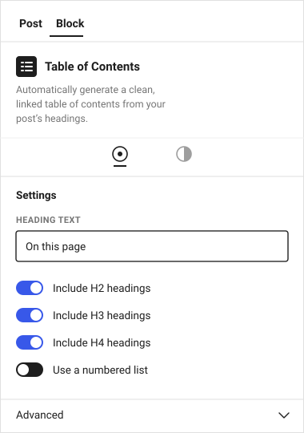
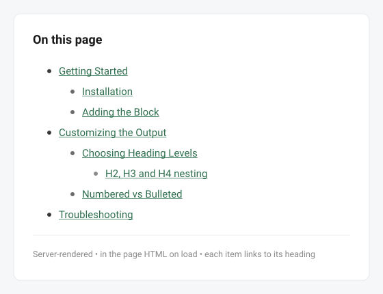

What TOCflow does
One focused block — Table of Contents — that turns the headings in your post into a clean, clickable outline. No shortcodes, no settings to wrangle.
The outline is rendered on the server, so it's present in the page's initial HTML. That's good for SEO and screen readers, and there's no heavy JavaScript on the front end. TOCflow also adds matching anchor IDs to your headings automatically, so every link scrolls to the right place.
Automatic
Builds itself from your H2/H3/H4 headings — and updates when they change.Accessible
Outputs a proper<nav> landmark with in-page anchor links.SEO-friendly
Server-rendered into the page HTML on load, not injected by JS.Screenshots


Quick start
1. Install the plugin
- Download
tocflow.zipfrom the latest release. - In WordPress admin, go to Plugins → Add New → Upload Plugin.
- Choose the ZIP, click Install Now, then Activate.
2. Add a Table of Contents
- Edit a post that has some Heading blocks (H2, H3, H4).
- Click the + inserter where you want the TOC — usually right after your intro.
- Search for "Table of Contents" and select it. The outline is generated automatically.
Settings reference
Select the block and open the Settings sidebar (gear icon) to adjust:
| Setting | What it does |
|---|---|
| Heading text | The title shown above the list (default: Table of Contents). Leave it blank to hide the title. |
| Include H2 / H3 / H4 | Choose which heading levels appear in the outline. H2 and H3 are on by default; H4 is off. |
| Use a numbered list | Switch between a numbered (1, 2, 3) and a bulleted list. |
You can also use the standard block controls for color, spacing, and typography to match your theme.
Troubleshooting
The TOC is empty or missing headings
- Make sure your headings are real Heading blocks, not bold text styled to look like headings.
- Check that the levels you used (e.g. H4) are enabled in the block settings.
Links don't scroll to the right place
- TOCflow adds anchor IDs automatically. If a heading already has a custom HTML anchor, that one is respected — make sure it's unique.
- A sticky header/menu can cover the target. A scroll-offset option is on the roadmap.
The block doesn't appear in the inserter
- Confirm the plugin is Activated under Plugins.
- Make sure you're using the block editor (Gutenberg), not the Classic editor.
Common mistakes to avoid
- Adding the block to a post with no headings — there's nothing to list.
- Disabling all heading levels — the list will be empty.
- Expecting it to read headings from other posts — each TOC reflects the post it lives in.
Frequently asked questions
Does it work with the Classic Editor?
No. It's a block for the WordPress block editor (Gutenberg).
Will it slow down my site?
No. The outline is rendered on the server as plain HTML — there's no heavy JavaScript on the front end.
Can I have more than one TOC on a page?
It's designed for one per post. Multiple blocks will each list the same headings.
Is it really free?
Yes — TOCflow is free and open source under the GPL-2.0-or-later license. Download it, test it, and use it on as many sites as you like.
Project links
Source code
github.com/matthummel-pa/tocflowDownload
Latest release (.zip)Report a bug
Open an issueContributing
CONTRIBUTING.mdChangelog
CHANGELOG.mdLicense
GPL-2.0-or-laterFound a bug or have a feature request? Open an issue and include your WordPress version, theme, and a screenshot if you can.